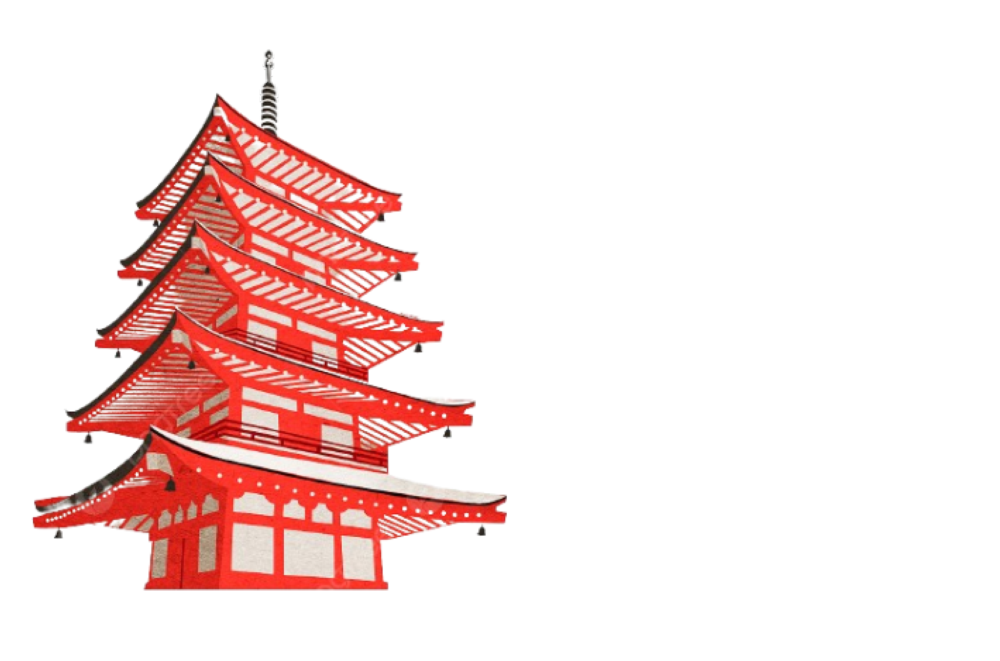
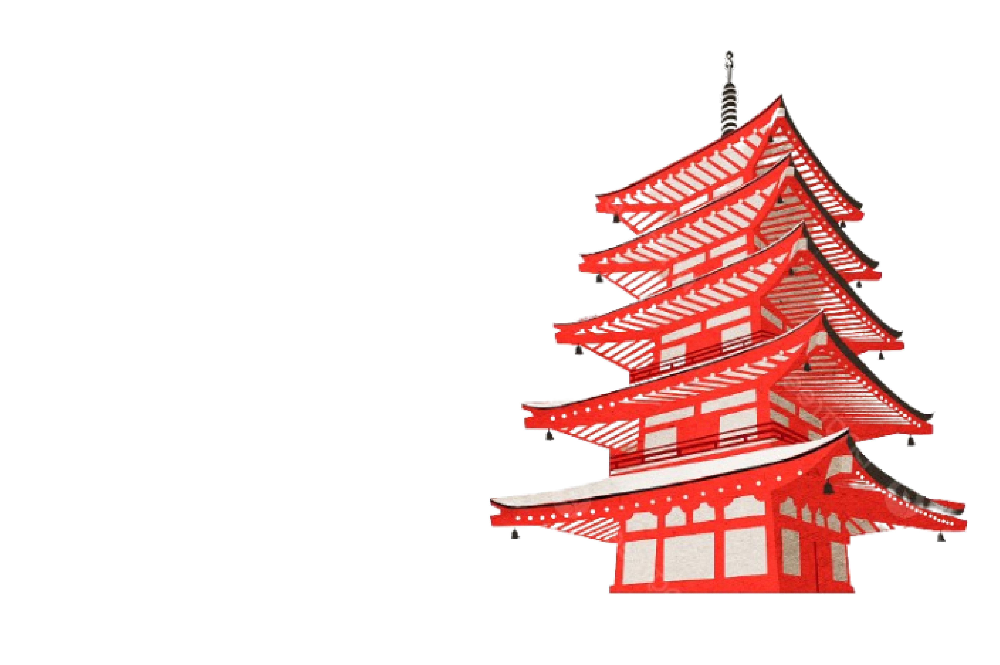
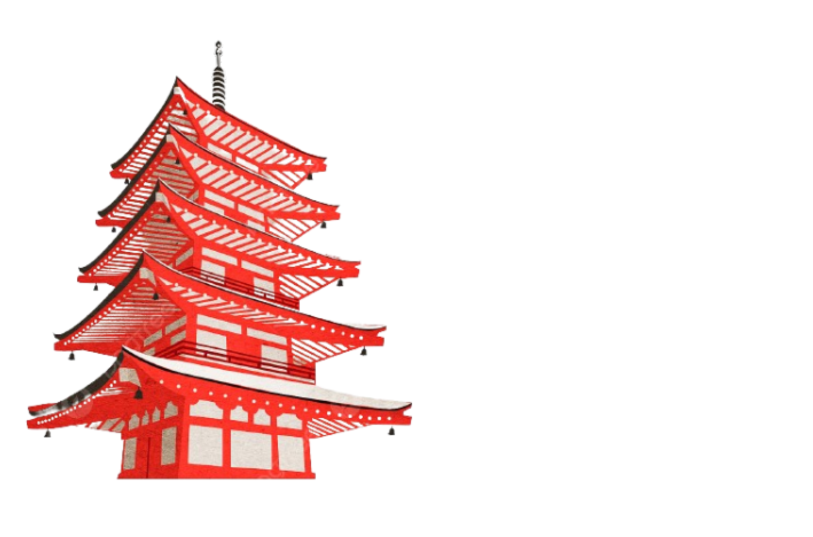
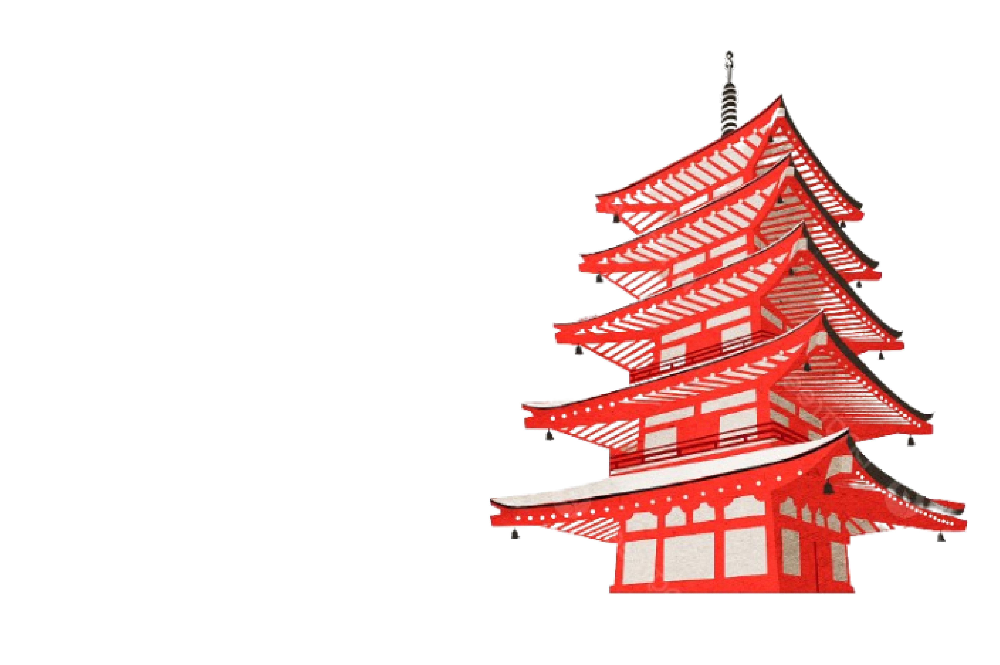
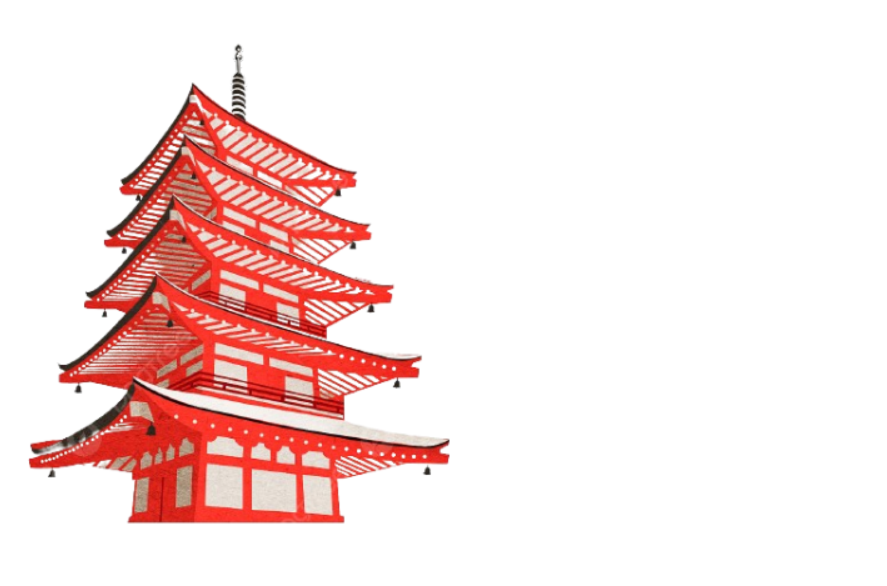
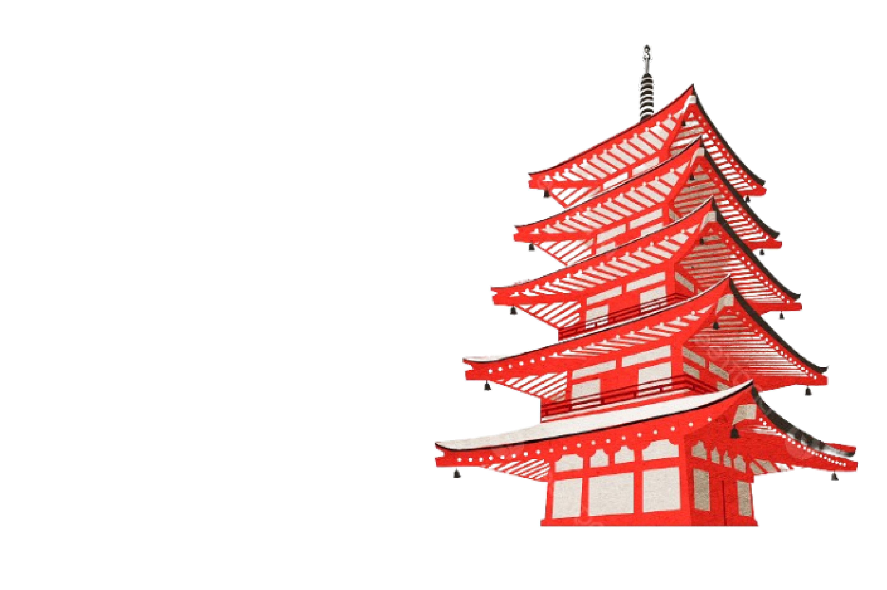
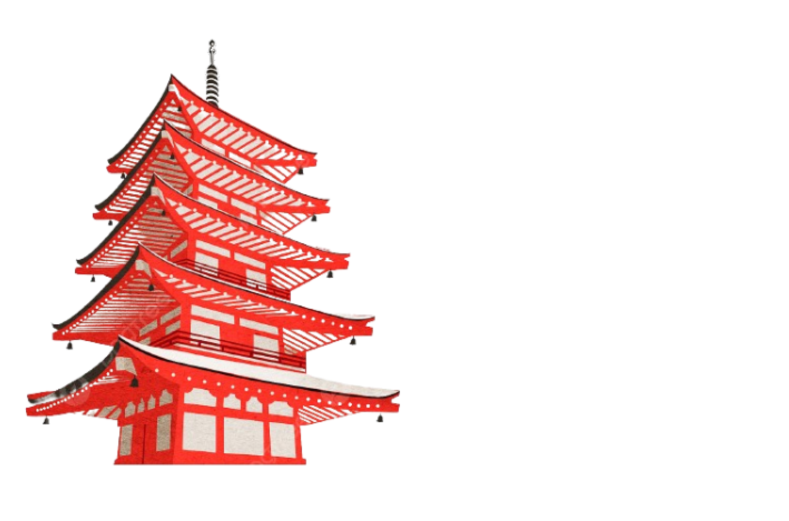
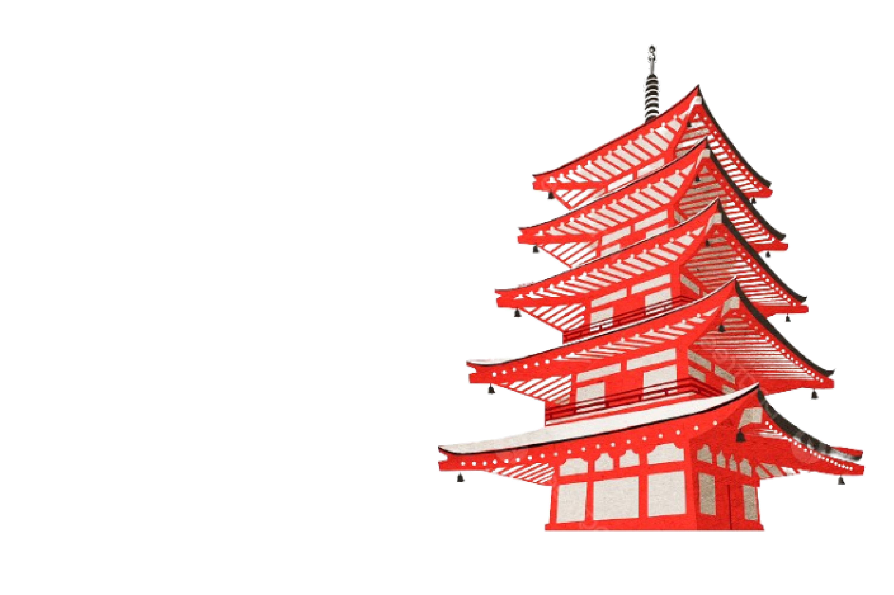

Mount Fuji

 







Gunung Fuji tidak hanya menjadi landmark geografis yang penting di Jepang, tetapi juga memiliki peran penting dalam sejarah dan budaya negara tersebut. Puncaknya yang menonjol menjadikannya landmark yang mudah dikenali dari jarak jauh, dan sering menjadi subjek dalam seni dan sastra Jepang.
Meskipun Jepang memiliki banyak gunung berapi, Gunung Fuji adalah gunung berapi tunggal terbesar di negara tersebut.
Pengakuan Gunung Fuji sebagai Situs Warisan Dunia UNESCO pada tahun 2013 menyoroti pentingnya gunung ini dalam konteks kekayaan alam dan budaya dunia. Pengakuan tersebut memperkuat kesadaran akan nilai penting Gunung Fuji sebagai aset global yang harus dilindungi dan dilestarikan.
Pendakian Gunung Fuji adalah pengalaman yang populer di kalangan penduduk setempat dan turis internasional. Musim pendakian berlangsung terutama selama musim panas, ketika jalur pendakian resmi dibuka. Meskipun rute-rute tersebut memiliki fasilitas yang memadai, pendakian tetap menantang karena ketinggian dan cuaca yang tidak dapat diprediksi.
Pemandangan awan yang indah yang sering terlihat di sekitar puncak Gunung Fuji selama musim panas, yang dikenal sebagai "laut awan" atau "unzen," adalah fenomena alam yang menakjubkan. Ini menciptakan lanskap yang spektakuler dan menjadi daya tarik tambahan bagi para pendaki dan wisatawan.
Gunung Fuji telah lama dianggap sebagai tempat suci dalam kepercayaan Shinto dan Buddhisme di Jepang. Sejumlah kuil dan kuil kecil terletak di lereng gunung, yang menjadi tempat ziarah dan persembahan bagi orang Jepang.
Ada lima rute pendakian yang berbeda menuju puncak Gunung Fuji. Rute-rute ini berbeda dalam kesulitan dan pemandangan yang ditawarkan.
Meskipun tidak aktif dalam beberapa waktu terakhir, Gunung Fuji tetap dianggap sebagai gunung berapi aktif dan terus dipantau oleh para ilmuwan untuk tanda-tanda aktivitas vulkanik.
Kawah besar di puncak Gunung Fuji merupakan sisa dari letusan gunung berapi sebelumnya dan menjadi objek wisata yang populer bagi para pendaki. Selain itu, kawah ini juga menjadi subjek penting dalam penelitian ilmiah tentang aktivitas vulkanik dan sejarah geologis gunung tersebut.
Selama berabad-abad, Gunung Fuji telah menjadi simbol budaya yang penting bagi masyarakat Jepang. Keberadaannya telah memengaruhi seni, sastra, agama, dan kehidupan sehari-hari orang Jepang, serta menjadi inspirasi bagi banyak orang di seluruh dunia.